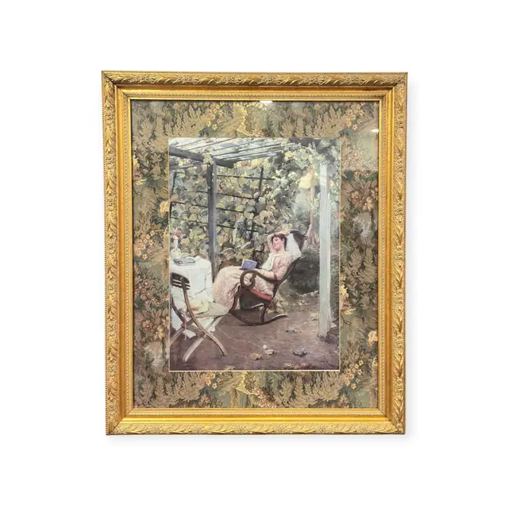
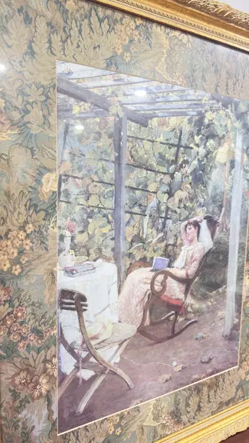
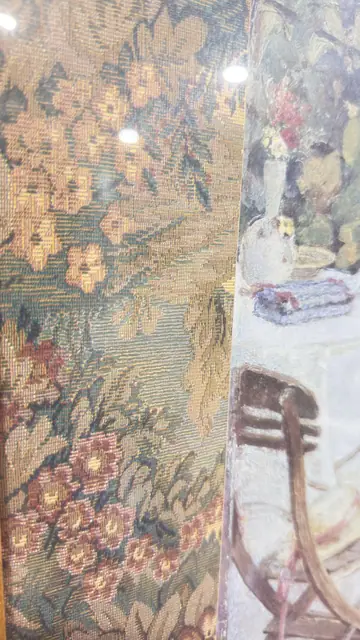
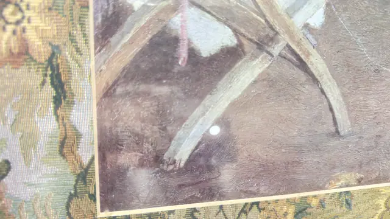

Paintings & Prints
Lady Reading Under a Vine Pergola, Framed
· late 19th to 20th century (image style late 19th century)
Price Upon Request




About the Item
A Victorian garden idyll: a woman in a long white lace-trimmed dress leans back in a bentwood rocker with a small blue book in her lap, a folding chair and a white cloth-covered table with a decanter, glass and books beside her. Overhead a whitewashed timber pergola carries a screen of vines that filters the light onto a dusty mauve-brown floor. The handling is loose and painterly, with visible directional brushwork in the beams and ground and softly blended pastel flesh and drapery. The palette is muted - cream, dusty rose, pale sage and violet-grey - and the picture is surrounded, unusually, by a woven floral tapestry mat instead of paper. Medium: oil on canvas. Condition: A pale diagonal line runs across the lower left of the picture - possibly a scratch, crease or old repair in the surface. Heavy glass glare in most frames. The tapestry mat looks intact but is dusty in places.
Details
- Creation Year:
- late 19th to 20th century (image style late 19th century)
- Dimensions:
- Height: 35.5 in (90.17 cm)
Width: 28.0 in (71.12 cm)
outside of frame - Medium:
- oil on canvas
- Period:
- 20Th
- Condition:
- Offered in the condition shown in the photographs.
- Reference Number:
- VO-82
- Documentation:
- no certificate photographed